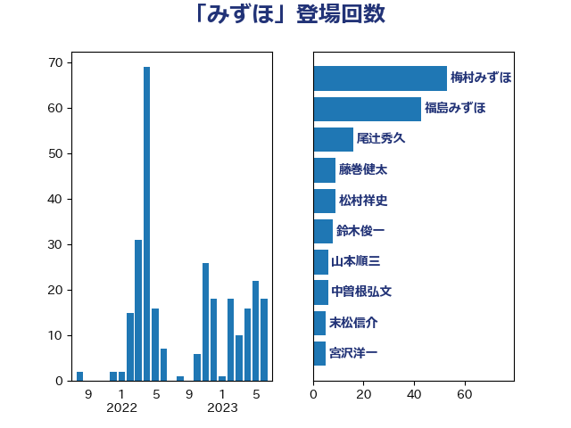

単語「みずほ」

| 梅村みずほ | 日本維新の会 | 53 回 |
| 福島みずほ | 社会民主党 | 43 回 |
| 尾辻秀久 | 無所属 | 16 回 |
| 藤巻健太 | 日本維新の会 | 9 回 |
| 松村祥史 | 自由民主党 | 9 回 |
| 鈴木俊一 | 自由民主党 | 8 回 |
| 山本順三 | 自由民主党 | 6 回 |
| 中曽根弘文 | 自由民主党 | 6 回 |
| 末松信介 | 自由民主党 | 5 回 |
| 宮沢洋一 | 自由民主党 | 5 回 |
| 齋藤健 | 自由民主党 | 4 回 |
| 杉尾秀哉 | 立憲民主党 | 4 回 |
| 大串博志 | 立憲民主党 | 4 回 |
| 古川元久 | 国民民主党 | 4 回 |
| 勝部賢志 | 立憲民主党 | 4 回 |
| 杉久武 | 公明党 | 3 回 |
| 平木大作 | 公明党 | 3 回 |
| 宮本岳志 | 日本共産党 | 3 回 |
| 古賀之士 | 立憲民主党 | 3 回 |
| 加藤勝信 | 自由民主党 | 3 回 |
| 舟山康江 | 国民民主党 | 2 回 |
| 石井章 | 日本維新の会 | 2 回 |
| 田村智子 | 日本共産党 | 2 回 |
| 斎藤嘉隆 | 立憲民主党 | 2 回 |
| 川田龍平 | 立憲民主党 | 2 回 |
| 山東昭子 | 自由民主党 | 2 回 |
| 大西健介 | 立憲民主党 | 2 回 |
| 大塚耕平 | 国民民主党 | 2 回 |
| 仁比聡平 | 日本共産党 | 2 回 |
| 階猛 | 立憲民主党 | 1 回 |
| 関口昌一 | 自由民主党 | 1 回 |
| 長谷川岳 | 自由民主党 | 1 回 |
| 鈴木庸介 | 立憲民主党 | 1 回 |
| 鈴木宗男 | 日本維新の会 | 1 回 |
| 野田国義 | 立憲民主党 | 1 回 |
| 足立康史 | 日本維新の会 | 1 回 |
| 西岡秀子 | 国民民主党 | 1 回 |
| 福山哲郎 | 立憲民主党 | 1 回 |
| 石川大我 | 立憲民主党 | 1 回 |
| 石井苗子 | 日本維新の会 | 1 回 |
| 石井準一 | 自由民主党 | 1 回 |
| 牧山ひろえ | 立憲民主党 | 1 回 |
| 滝沢求 | 自由民主党 | 1 回 |
| 浜田聡 | NHK党 | 1 回 |
| 泉健太 | 立憲民主党 | 1 回 |
| 永岡桂子 | 自由民主党 | 1 回 |
| 松沢成文 | 日本維新の会 | 1 回 |
| 徳永エリ | 立憲民主党 | 1 回 |
| 岩渕友 | 日本共産党 | 1 回 |
| 山田宏 | 自由民主党 | 1 回 |
| 塩村あやか | 立憲民主党 | 1 回 |
| 塩川鉄也 | 日本共産党 | 1 回 |
| 加田裕之 | 自由民主党 | 1 回 |
| 前川清成 | 日本維新の会 | 1 回 |
| 上田清司 | 国民民主党 | 1 回 |
| 三原じゅん子 | 自由民主党 | 1 回 |